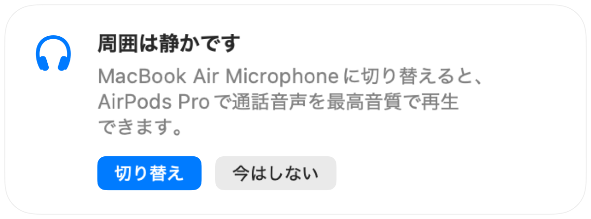

Macの通話中にAirPodsの音質が悪くなる理由
AirPodsを使ってオンライン会議に参加すると、急に相手の声がこもったり平坦に聞こえたりすることがあります。これは故障ではありません。AppがAirPodsのマイクを使用すると、Bluetoothが通話モードに切り替わり、全体の再生音質が大幅に低下するためです。
解決策は、Macの内蔵マイクで音声を拾い、AirPodsを受信・再生専用にすることです。静かな部屋であればMacの内蔵マイクでも十分クリアに届き、AirPodsでも最高音質で通話を聞くことができます。Muffleは周囲が静かなことを検知し、マイクの切り替えを提案します。
通話中も最高音質を維持する方法
- 1
Muffleをインストールし、「環境に最適なマイクを提案」をオンにしておきます。
- 2
通常どおりAirPodsを使って通話に参加します。
- 3
Muffleに「周囲は静かです」と表示されたら、「切り替え」をクリックします。
- 4
その後周囲が騒がしくなった場合は、Muffleが再びAirPodsのマイクへの切り替えを提案します。

- この切り替えは、通話Appがシステムのデフォルトマイクを使用している場合に機能します。Google Meet、Zoom、Teamsなどのオーディオ設定で「システムと同じ」またはデフォルトを選択してください。
- Macの内蔵マイクを使用する際は、Macの近くにいてください。Muffleはあなたの声がはっきりと聞き取れる場合にのみ切り替えを提案します。
よくある質問
Why do AirPods sound bad on Mac calls?
Bluetoothの仕様上、高音質ステレオ再生と音声入力を同時に行う帯域が足りないため、マイク使用中はAirPodsが通話モードに切り替わり音質が低下します。
Muffleはマイクを自動で勝手に切り替えますか？
いいえ。Muffleはより適切なマイクを提案するだけです。「切り替え」をクリックするまでマイクが変わることはありません。